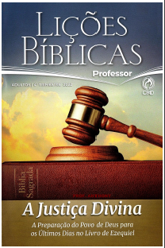

EBD | 4° Trimestre De 2022 | CPAD – Adultos
Tema do Trimestre: A Glória e a Justiça de Deus – A Igreja e a Convocação do Profeta Ezequiel para um Despertamento Espiritual
Comentarista: José Gonçalves.
LIÇÕES DO TRIMESTE: A Glória e a Justiça de Deus
- Lição 01: Ezequiel, o Atalaia de Deus:
- Lição 02: Vem o Fim:
- Lição 03: As Abominações do Templo:
- Lição 04: Quando se Vai a Glória de Deus:
- Lição 05: Contra os Falsos Profetas:
- Lição 06: A Justiça de Deus:
- Lição 07: A Responsabilidade é Individual:
- Lição 08: O Bom Pastor e os Pastores Infiéis:
- Lição 09: Gogue e Magogue: Um Dia de Juízo:
- Lição 10: A Restauração Nacional e Espiritual de Israel:
- Lição 11: A Visão do Templo e o Milênio:
- Lição 12: Imersos no Espírito nos Últimos Dias:
- Lição 13: O Senhor está Ali:
Escola Biblica Dominical 20 de Novembro de 2022| Lição 08: O Bom Pastor e os Pastores Infiéis
TEXTO ÁUREO
”Eu sou o bom Pastor; o bom Pastor dá a sua vida pelas ovelhas.” (Jo 10.11)
VERDADE PRÁTICA
As Escrituras revelam Deus como o pastor do seu povo, mas isso se aplica também aos líderes eclesiásticos. Deus dá bons pastores ao seu povo, e também remove os maus.

LEITURA DIÁRIA
- Segunda – Sl 78.70-72 O cajado de Davi continuou no comando da nação de Israel.
- Terça – 1 Rs 22.17 O profeta Micaías viu Israel como ovelhas dispersas sem pastor
- Quarta – Mt 9.36 Jesus via o povo de Israel como um rebanho de ovelhas sem pastor
- Quinta – Jr 3.15 Deus prometeu dar à sua igreja pastores segundo o seu coração
- Sexta – Ef 4.11 O Senhor deu pastores à sua igreja, o Corpo de Cristo
- Sábado – 1 Pe 5.2-4 A igreja, assim como o povo de Israel, é o rebanho de Deus
LEITURA BÍBLICA EM CLASSE - Ezequiel 34.1-12
1 – E veio a mim a palavra do SENHOR, dizendo:
2 – Filho do homem, profetiza contra os pastores de Israel; profetiza e diz aos pastores: Assim diz o Senhor JEOVÁ: Ai dos pastores de Israel que se apascentam a si mesmos! Não apascentarão os pastores as ovelhas?
3 – Comeis a gordura, e vos vestis da lã, e degolais o cevado; mas não apascentam as ovelhas.
4 – A fraca não fortalecestes, e a doente não curastes, e a quebrada não ligastes, e a desgarrada não tornastes a trazer, e a perdida não buscastes; mas dominais sobre elas com rigor e dureza.
5 – Assim, se espalharam, por não haver pastor, e ficaram para pasto de todas as feras do campo, porquanto se espalharam. 6 – As minhas ovelhas andam desgarradas por todos os montes e por todo o alto outeiro; sim, as minhas ovelhas andam espalhadas por toda a face da terra, sem haver quem as procure, nem quem as busque.
7 – Portanto, ó pastores, ouvi a palavra do SENHOR:
8 – Vivo eu, diz o Senhor JEOVÁ, visto que as minhas ovelhas foram entregues à rapina e vieram a servir de pasto a todas as feras do campo, por falta de pastor, e os meus pastores não procuram as minhas ovelhas, pois se apascentam a si mesmos e não apascentam as minhas ovelhas,
9 – portanto, ó pastores, ouvi a palavra do SENHOR:
10 – Assim diz o Senhor JEOVÁ: Eis que eu estou contra os pastores e demandarei as minhas ovelhas da sua mão; e eles deixarão de apascentar as ovelhas e não se apascentarão mais a si mesmos; e livrarei as minhas ovelhas da sua boca, e lhes não servirão mais de pasto.
11 – Porque assim diz o Senhor JEOVÁ: Eis que eu, eu mesmo, procurarei as minhas ovelhas e as buscarei.
12 – Como o pastor busca o seu rebanho, no dia em que está no meio das suas ovelhas dispersas, assim buscarei as minhas ovelhas; e as farei voltar de todos os lugares por onde andam espalhadas no dia de nuvens e de escuridão.
Hinos Sugeridos: 156, 283, 4313 da Harpa Cristã
INTRODUÇÃO
O profeta Ezequiel enfoca, no capítulo 34, quatro pontos sobre a figura do pastor, a saber: os pastores infiéis (vv.1-10), Deus corno o futuro bom pastor (vv.11- 16), o julgamento entre as próprias ovelhas (vv.17-22) e o Messias corno o pastor de Deus (vv.23-31). Por limite de espaço, a presente lição se restringirá aos pastores infiéis e ao bom pastor.
Palavra Chave:
PASTOR
I – SOBRE O REBANHO
Primeiro é necessário identificar a ovelha no seu sentido literal para compreender o sentido metafórico. Isso pode explicar a razão da Bíblia nos comparar com ovelhas. O Salmo 23 apresenta um quadro perfeito dessa comparação.
1- Ovelhas.Ovelha é a fêmea do carneiro e o cordeiro é filho do carneiro até um ano. Das 74 vezes que o termo aparece no Novo Testamento, apenas uma vez é literal (Jo 2.14). É um animal dócil e símbolo de sacrifício e redenção (Is 53.7; At 8.32). A natureza da ovelha e sua relação com o ser humano resultaram em diversas figuras que ilustram o relacionamento entre Deus e o seu povo (Sl 23.1; 74.1; 100.3).
2- Natureza. As ovelhas são animais indefesos e medrosos que se assustam facilmente e se dispersam rapidamente (Zc 13.7). Uma ovelha virada de costas com as patas para cima não consegue se levantar e, além de morrer depressa, torna-se presa fácil de predadores. Somente o pastor pode socorrê-la; é, pois, necessário uma supervisão diária. As ovelhas não cuidam de si mesmas, elas exigem atenções continuadas de dia e de noite (Lc 2.8) sob muitos aspectos (Lc 15.4-6). O rebanho precisa de cuidados por causa dos predadores (1Sm 17.34, 35) e de outros infortúnios como a presença de insetos e parasitas (SI 23.5).
3- O rebanho. O povo de Israel e a igreja são identificados diversas vezes, na Bíblia, como rebanho (Nm 27.17; 1 Pe 5.2). Além do sentido próprio do termo, figuradamente ”rebanho” é aplicado a Israel por desfrutar do relacionamento pactual com Deus (Is 40.11). Isso vale também para a igreja no Novo Testamento (Mt 26.31; Lc 12.32) e diversas vezes Israel era visto como ovelhas sem pastor (1Rs 22.17; Mt 9.36; 10.16; 15.24).
4- Os pastores. A palavra ”pastores de Israel”, no contexto de Ezequiel, bem como no de Jeremias 23.1-5, se refere aos governantes. O sistema político na antiguidade de Israel era teocrático e não era possível separar o civil do religioso, diferente do que acontece nos estados laicos na atualidade. É importante entender essa diferença, pois diversas vezes adeptos de grupos religiosos, estranhos ao cristianismo bíblico, usam essas passagens bíblicas para atacar os nossos líderes. Trata-se de críticas rasteiras com o único objetivo: desqualificar a nossa doutrina e os nossos pastores.
SINOPSE I
O rebanho nas Escrituras pode ser identificado com o povo de Israel e a Igreja de Cristo.
II – SOBRE OS PASTORES INFIÉIS
O profeta Ezequiel compara os líderes de Israel a pastores. Pode-se dizer que o tema da presente lição é provavelmente o mais familiar do livro de Ezequiel por causa da linguagem pastoril.
1- O pastor de ovelhas.A função primordial do pastor é alimentar, guiar e proteger o rebanho e isso ilustra bem o papel do líder de uma nação. Muitos líderes de Israel fizeram isso com perícia, dedicação e responsabilidade como Davi ( Sl 78.72). A parábola da ovelha perdida revela esse dever do pastor (Lc 15.4-6). Moisés e Davi foram pastores de ovelhas no sentido estrito da palavra (Êx 3.1; Sl 78.70,71). Mas os líderes de Israel, contemporâneos de Ezequiel, se desviaram de suas funções.
2- O que os governantes faziam (vv.2,3)? Cuidavam de si mesmos: “Ai dos pastores de Israel que se apascentam a si mesmos!,, (v.2). Essa era uma denuncia contra as autoridades civis e religiosas de Jerusalém que empregavam todo o seu esforço em benefício próprio, deixando de lado a função pela qual foram constituídos: proteger o povo e prover as condições para o bem-estar espiritual e econômico dos seus cidadãos. O profeta mostra três práticas deploráveis deles numa linguagem metafórica: ”Comeis a gordura, e vos vestis da lã, e degolais o cevado; mas não apascentais as ovelhas” (v.3) para designar exploração e abuso de sua autoridade. Eles não cuidavam do povo e nem se esforçavam para suprir suas necessidades, antes cuidavam de si mesmos (Jr12.10).
3- O que os governantes não faziam (vv.4,8)? Não cuidavam das ovelhas. As ovelhas fracas, doentes, quebradas, desgarradas e perdidas precisam de cuidados especiais, mas a realidade era diferente: ”A fraca não fortalecestes, e a doente não curastes, e a quebrada não ligastes, e a desgarrada não tornastes a trazer, e a perdida não buscastes; mas dominais sobre elas com rigor e dureza” (v.4). Essa linguagem metafórica revela o estado de miséria da população de Jerusalém. Essa situação nos leva a uma reflexão sobre a atual conjuntura do nosso país, que não é boa. Devemos orar pela nossa nação e seus governantes (1Tm 2.1-3).
4- As ovelhas dispersas (vv. 5,6). Ezequiel dirige esses oráculos divinos à casa de Judá, mas a mensagem diz respeito a todos os filhos Israel, até mesmo os dispersos pelos assírios (v.6). A mesma diáspora aconteceu em Judá com a destruição de Jerusalém, mas não é possível saber a data do pronunciamento desse discurso, se antes ou depois da queda da cidade santa. O profeta recebeu a notícia dessa derrocada algum tempo depois da destruição de Jerusalém ”no ano duodécimo, no décimo mês, aos cinco do mês” (Ez 33.21). Segundo os dados fornecidos nessa passagem, parece indicar 8 de janeiro de 585 a.C
SINOPSE II
A atuação dos pastores infiéis tem como consequência trágica a dispersão das ovelhas.
III – SOBRE O BOM PASTOR
O próprio Deus toma as dores das ovelhas e se coloca, Ele mesmo, como Pastor do rebanho. O Salmo 23 e o discurso de Jesus como o Bom Pastor (Jo 10.7-18) deixam isso muito claro.
1- A reação divina contra os maus pastores (vv.10-12). Eles não visitaram as ovelhas no sentido de cuidar delas; agora é Deus quem vai visitar esses maus pastores no sentido de castigar (Jr 23.2). Deus promete buscar as ovelhas dispersas em toda a parte do mundo, uma referência ao retorno da segunda diáspora (Ez 34.12). Ele promete ainda libertar o seu povo das mãos deles: ”E vos darei pastores segundo o meu coração, que vos apascentem com ciência e com inteligência” (Jr 3.15). Essa promessa não se refere ao Messias, mas pode se aplicar aos atuais pastores de igrejas (Mt 23.34;..Ef 4.11). O profeta está dizendo que Javé vai dar ao povo líderes e governantes segundo os ideais de Davi (At 13.22). A promessa era para um futuro distante (Ez 34.23,24; 37.24; Os 3.5).
2- Jesus, o bom Pastor.O Senhor Jesus disse: ”Eu sou o bom pastor” (Jo 10.11,14). Ele é o Grande Pastor das ovelhas (1Pe 5.4), pois que, assim como Javé vai trazer de todas as nações os judeus dispersos para à terra de seus antepassados, o que já está acontecendo, em Israel, no Oriente Médio, da mesma forma o Senhor Jesus está congregando, de todas as nações, as ovelhas para o seu redil (Jo 10.16). Todas as profecias do Antigo Testamento se convergem para o Messias (Lc 24.44).
3- O pastor cristão.O bom pastor é aquele que está disposto a arriscar a vida pelas ovelhas, assim como fez Davi enfrentando um leão e um urso (1Sm 17.34-36). Jesus disse: ”o bom Pastor dá a sua vida pelas ovelhas” (Jo 10.11). Ele simplesmente não arrisca a vida, mas a entrega de acordo com a vontade do Pai (Jo 10.17,18). O Senhor Jesus concedeu pastores à igreja (Ef 4.11) para o aperfeiçoamento dos crentes e a edificação do Corpo de Cristo (Ef 4.11- 16). Ainda que alguém considere alguns pastores faltosos, isso na sua maneira de entender as coisas, o melhor é seguir os ensinos de Jesus: ”Observai, pois, e praticai tudo o que vos disserem; mas não procedais em conformidade com as suas obras” (Mt 23.3). Deus sabe cuidar dos seus servos, é dever nosso orar por eles.
SINOPSE III
Jesus como o Bom Pastor e o verdadeiro modelo do pastor cristão
CONCLUSÃO
O comportamento do ser humano se compara em muitos aspectos aos das ovelhas e, por essa razão, Deus nos chama nas Escrituras de ovelhas. Há entre elas aquelas que dão marradas umas nas outras para marcar território o que na,…,,o é diferente entre nós, seres humanos. Há competições entre as ovelhas (Ez 34.20-22). Isso desagrada a Deus. O nosso relacionamento entre irmãos deve ser de maneira que glorifique a Deus (Sl 133.1; 1 Co 10.31).
VOCABULÁRIO
- MARRADA:ato ou efeito de marrar (acometer com chifres; deparar; confrontar).